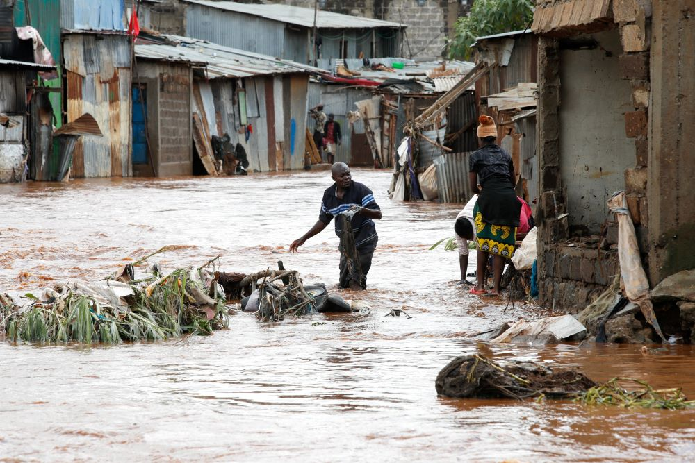
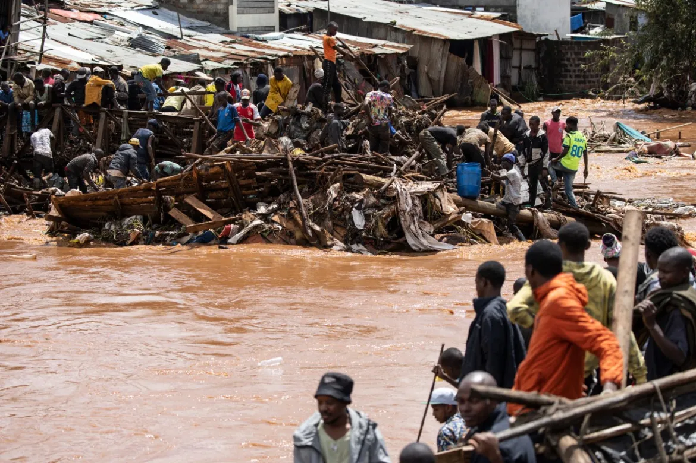
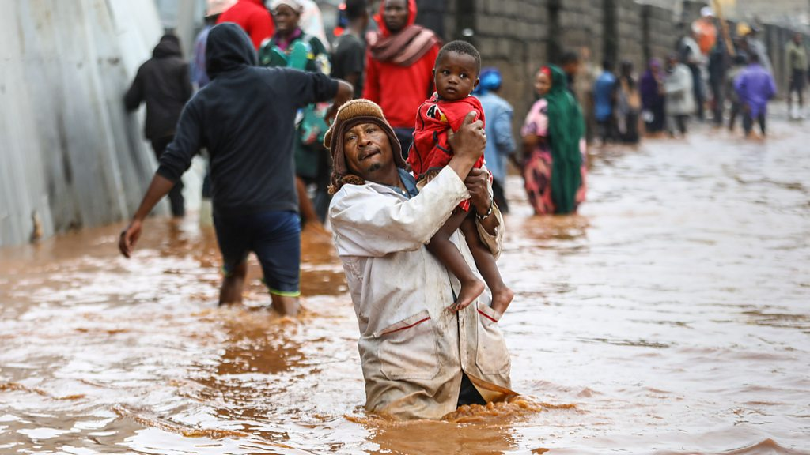
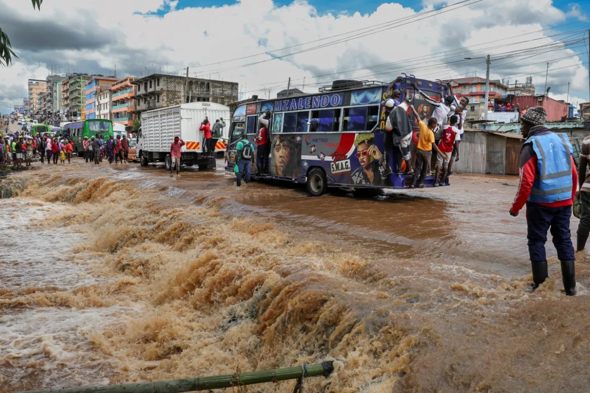

Get to know our story
FLOODS IN KENYA
OVERVIEW
In recent weeks, Kenya has been grappling with one of its most severe natural disasters:widespread flooding.
The nation, known for its diverse landscapes and vibrant communities, is now facing a formidable challenge
as torrential rains have triggered floods, wreaking havoc across various regions.
From displacing families to disrupting vital infrastructure, the floods have left a trail of destruction in
their wake,prompting urgent humanitarian responses and calls for long-term solutions to mitigate future disasters.
The scale of the flooding in Kenya is staggering, with reports indicating that thousands of people have been
affected. Homes have been submerged, crops destroyed, and livestock swept away, leaving many communities without
basic necessities.The impact extends beyond residential areas, with crucial infrastructure such as roads and
bridges damaged hampering rescue efforts and hindering access to essential services. 
image of roads blocked making it hard for people to pass through

House destroyed by the floods leaving people displaced

image of impassable roads for children

image of roads being too flooded for cars
Here is a video of a local resident filming a mortorcycle being carried away by the floods,
this left many people stunned as the driver had to leave his vehicle in order to save his life
Others grew ignorant and attemped to crossed the roads
the aftermath was deadly,as some prefered their motorcycle instead of their lives